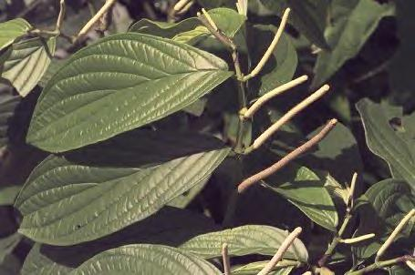
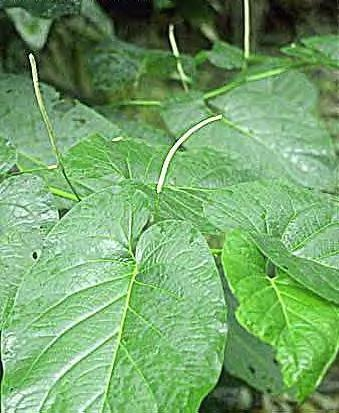
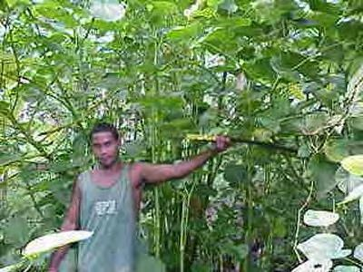

Who Eats Parsnips?Intro to Phenylpropanoids in Essential Oilsby Halfapint[ Back to the Chemistry Archive ] Here are some of the plants in which essential oils of interest, containing high boiling phenylpropanoids, may be found. Apiole: Petroselinum crispum -- Parsley; 19,650 - 36,580 ppm in Seed; Piper cubeba -- Cubeb, Cubeb Pepper; 300 - 600 ppm in Fruit; Petroselinum crispum -- Parsley; 0.36 - 22 ppm in Leaf JKA33:62 2; Anethum graveolens -- Dill, Garden Dill; in Root; Apium graveolens -- Celery; in Essential Oil; Foeniculum vulgare -- Fennel; in Fruit; Levisticum officinale -- Lovage; in Seed; Oenanthe aquatica -- Water Fennel, Water Hemlock; in Fruit; Oenanthe crocata L. -- Water Dropwort; in Root; Peperomia pelucida -- Pepper elder, Yerba de la plata; in Plant TRA; Sassafras albidum -- Sassafras; in Root; Asarone: Daucus carota -- Carrot; 400 ppm in Seed; Piper cubeba -- Cubeb, Cubeb Pepper; in Fruit; Sassafras albidum -- Sassafras; in Root; Croweacin: Eriostemon crowei --- see TiKHAL Asarum sieboldii --- Siebold's wild ginger; in Root; Dillapiole: Anethum graveolens -- Dill, Garden Dill; 1,440 - 40,425 ppm in Fruit; Cuminum cyminum -- Cumin; 150 ppm in Fruit; Piper cubeba -- Cubeb, Cubeb Pepper; in Fruit; Piper guineense -- Ashanti pepper; 380,000 - 880,500 ppm in Leaf essential oil; Perilla frutescens -- Perilla; 2,200 - 3,400 ppm in Leaf; Foeniculum vulgare -- Fennel; in Root Essential Oil; Elemicin: Canarium indicum -- Java-Olive, Manila Elemi; 3,500 - 8,750 ppm in Essential Oil; Myristica fragrans -- Mace, Muskatnussbaum (Ger.), Nutmeg, nogal moscado (Sp.), nuez moscada (Sp.); 20 - 3,500 ppm in Seed; Perilla frutescens -- Perilla; 2,500 - 3,200 ppm in Leaf PC25:2085; Daucus carota -- Carrot; 2,000 ppm in Seed; Petroselinum crispum -- Parsley; 821 ppm in Seed; Acorus calamus -- Calamus, Flagroot, Myrtle Flag, Sweet Calamus, Sweetflag, Sweetroot; 10 - 650 ppm in Rhizome; Collinsonia canadensis -- Stone Root; 18 ppm in Plant; Petroselinum crispum -- Parsley; 18 ppm in Leaf; Anethum graveolens -- Dill, Garden Dill; in Plant; Asarum canadense -- Wild Ginger; in Rhizome; Asiasarum heterotropoides -- Asian Wild Ginger; in Root; Juniperus virginiana -- Red Cedar; in Leaf; Laurus nobilis -- Bay, Bay Laurel, Bayleaf, Grecian Laurel, Laurel, Sweet Bay; in Plant; Sassafras albidum -- Sassafras; in Root; Syringa vulgaris -- Lilac; in Flower; Myristicin: Pastinaca sativa -- Parsnip; 183,000 - 662,000 ppm in Root Essential Oil; Petroselinum crispum -- Parsley; 14,785 - 19,800 ppm in Seed; Myristica fragrans -- Mace, Muskatnussbaum (Ger.), Nutmeg, nogal moscado (Sp.), nuez moscada (Sp.); 800 - 12,800 ppm in Seed; Perilla frutescens -- Perilla; 300 - 3,800 ppm in Leaf; Petroselinum crispum -- Parsley; 425 - 2,550 ppm in Plant; Myristica fragrans -- Mace, Muskatnussbaum (Ger.), Nutmeg, nogal moscado (Sp.), nuez moscada (Sp.); 410 - 620 ppm in Leaf; Carum carvi -- Caraway, Carum, Comino (Sp.), Comino de prado (Sp.), Kummel (Ger.); 60 - 420 ppm in Fruit; Petroselinum crispum -- Parsley; 131 ppm in Leaf; Carum carvi -- Caraway, Carum, Comino (Sp.), Comino de prado (Sp.), Kummel (Ger.); 120 ppm in Plant; Daucus carota -- Carrot; 0.5 - 34 ppm in Root; Anethum graveolens -- Dill, Garden Dill; in Fruit; in Root; Apium graveolens -- Celery; in Plant; Coriandrum sativum -- Chinese Parsley, Cilantro, Coriander; in Fruit; Foeniculum vulgare -- Fennel; in Fruit; Levisticum officinale -- Lovage; in Seed; Oenanthe aquatica -- Water Fennel, Water Hemlock; in Fruit; Oenanthe crocata -- Water Dropwort; in Plant; Oenanthe javanica -- Javan Water Dropwort; in Fruit; Pimpinella anisum -- Anise, Sweet Cumin; in Plant; Piper nigrum -- Black Pepper, Pepper, White Pepper; in Fruit; Sassafras albidum -- Sassafras; in Root; Vaccinium corymbosum -- Blueberry; in Fruit; Safrole: Sassafras albidum -- Sassafras; 8,000 - 16,000 ppm in Root; Myristica fragrans -- Mace, Muskatnussbaum (Ger.), Nutmeg, nogal moscado (Sp.), nuez moscada (Sp.); 120 - 2,720 ppm in Seed; Ocimum basilicum -- Basil, Cuban Basil, Sweet Basil; 60 - 400 ppm in Plant JBH JAD; Rosmarinus officinalis -- Rosemary; 32 - 95 ppm in Plant; Hamamelis virginiana -- Witch Hazel; 10 ppm in Leaf; Anethum graveolens -- Dill, Garden Dill; in Plant; Angelica sinensis -- Chinese Angelica, Dang Gui, Dang Quai, Dang Qui, Dong Gui, Dong Quai; in Root; Asiasarum heterotropoides -- Asian Wild Ginger; in Root; Asiasarum sieboldii -- Siebold's Wild Ginger; in Root; Camellia sinensis -- Tea; in Leaf; Cananga odorata -- Cananga, Ylang-Ylang; in Flower; Chenopodium ambrosioides -- Epazote, Wormseed; in Plant; Cinnamomum aromaticum -- Canela de la China (Sp.), Canelero chino (Sp.), Canelle de Cochinchine (Fr.), Cannelier Casse (Fr.), Cannelier de Chine (Fr.), Cassia, Cassia Bark, Cassia Lignea, China Junk Cassia, Chinazimt (Ger.), Chinese Cassia, Chinese Cinnamon, Chinesischer Zimtbaum (Ger.), Kashia-Keihi (Jap.), Saigon Cinnamon, Zimtcassie (Ger.); in Plant; Cinnamomum camphora -- Camphor, Ho Leaf; in Leaf; Cinnamomum verum -- Ceylon Cinnamon, Cinnamon; in Plant; Illicium verum -- Chinese Star Anise, Chinesischer Sternanis (Ger.), Star Anise, Sternanis (Ger.), anis de China (Sp.), anis estrellado (Sp.); in Plant; Juniperus virginiana -- Red Cedar; in Leaf; Piper auritum -- Cordoncillo, Hierba Santa, Hoja Santa; in Leaf; Piper cubeba -- Cubeb, Cubeb Pepper; in Fruit; Piper nigrum -- Black Pepper, Pepper, White Pepper; in Fruit; Tamarindus indica -- Indian Tamarind, Kilytree, Tamarind; in Fruit; Umbellularia californica -- California Bay; in Plant; --- When concentrations are given in parts per million, this figure refers to the dried plant material. It may not be very relevant to the amount which can be obtained from the essential oil. Also, this is a very partial (incomplete) list. Many plants known to have useful oils are not listed. Coming: enthusiastic endorsements of particular plants, notable for the value of their oils --- to us. The Pied Pipers At a costume party, or in a show, did you ever see anybody in a "domino", quartered black and white? Through the Middle Ages, that was a secret signal of heretical attitude, wearing a garmet in which the colors were not symmetrical. The word "pied" refers to this style of clothing, with mismatched sleeves and legs. It was connected with the uncontrollable tarantella dance, and the overall ignification refers back to the community fear of ergotism, as a plague. Dancers clad in these motley outfits would cavort through a town to draw off the chances of the residents inexplicably tripping out. Moldy rye bread was not a good way to get off; it had too many side effects, often fatal, from the mixed ergotamines. The Pied Piper legend reflected the fear that the children would be drawn into psychedelic realms never to return, by music which was supernaturally enthralling. After some centuries, this has happened. There is of course no connection between pepper plants and musicians who tweedle on clay flutes, to lure youngsters from home and hearth. It is a mere homonym. By coincidence, it so happens that plants of the genus Piper are chock full of a wide variety of phenylpropanoids. Useful essential oils are the rule, and not the exception, among pepper species. There are no common names in English for most of the Piper genus, since they are tropical plants. There are dozens of them, vanishing from warm forests around the world. There are Spanish and Portuguese names, commonly used to denote these Piper plants in Mesoamerica and South America, because that's what people speak where they occur. We know about Piper negrum, black pepper, though most of us haven't seen the plant. We know about Piper betel, because in Pacifica they chew the leaves. Piper methysticum likewise. I don't know of any import restrictions on plant products from any of the species of genus Piper. (I'd shy away from ordering any foreign essential oil known to contain more than 30% safrole unless I knew more about what I was doing. That's an important distinction: the plant parts, dried, cut and sifted, or powdered, in most cases even a solid concentrated extractive, may be ordered from overseas sources without undue concern, for it is unlikely anyone is funded to scrutinize transaction patterns in the immense herb market.) Piper aduncum  Piper aduncum. That's from aduncus: bent, crooked, curved, hooked. Not because it's a shady character, but because its leaves flop down. It may as well be a shady character, considering all its aliases. It has no fewer than 27(!) synonyms in the published literature, that's binomial Latin nomenclature. The main one is P. angustifolium, these are the same plant. What you asked, its English common name, is Matico pepper (as P. angustifolium), or Spiked pepper (as P. aduncum). In Spanish it's Cordoncillo or Higuillo de Hoja Menuda; Portugese, Aperta-ruao. The Chinese have a name for it, Xia ye hu jiao. Piper auritum  Piper auritum too, Mo xi ge hu jiao or, Mo xi ge hu jiao ye. This one has the erstwhile scientific pseudonyms Piper sanctum and Artanthe sanctum, of course referring to the Mexican pepperleaf, Sacred pepper, or Veracruz pepper. The Spanish names are Acuyo, Anisillo, Cordocillo, Hoja de Ajan, Hoja de Santa Maria, Santilla de comer, Hoja santa, Yerba santa, and others regionally. It's sacred and a comestible at the same time. Piper aduncum and Piper auritum. These are not cute little pepper bushes for long. By their second season they shoot up into fuckin TREES, leave them alone and they will reach 6 meters into the air. It's a jungle out there, dripping with (well, half of 1%) essential oil. Fast growing, well you might call it that. Then it grows up...  Piper auritum takes over by blocking sunlight to the ground, with its huge el monstro safrolio leaves, the size of elephant ears but round. In Mexico, these rootbeerio fragrant leaves are used to wrap baked fish, tamale style, yum. A sacred plant that's edible. Both these plants are naturalized throughout Pacifica, if you were wondering about the Chinese names. I spared you the Fijian names, but in some islands they are called false kava, particularly P. aduncum. They are effective pioneer species in disturbed habitats, preventing erosion of sloping land, for example. They spread into cleared or abandoned land, and keep it from degenerating into nonproductive grassland. Their seeds are viable in bat shit, and fruit bats love these plants. One or the other may be considered noxious weeds in places like Florida, Australia, Singapore, and Hawaii, and if you live on an island in the Pacific well fuck you. What I'm saying is that they're easy to grow, and if you get some, you'll never have to look for another place to get safrole. Or dillapiole, as the case may be. Try both, for varied flavors. Piper auritum oil is 80% safrole. Piper hispidinervem oil has 86% safrole, but P. auritum is more available, outside of Brazil. The Mexicans consider P. auritum as a food, not an herb. Piper aduncum oil is 80% dillapiole! Don't go looking for these oils as a commodity, though in Brazil and Peru they may be sold as such. The plant materials are available as a product you may import as herbs. They are mentioned because P. auritum and P. aduncum grow in North America, and both are available on the market as live plants, and both are invasive escapees in South Florida. This info is for those who wish to grow their own plants, and extract their own essential oils from them. If that ain't you, just never mind. Wild Ginger! Parsley! Parsnips! Asarum species (formerly Asiasarum) -- wild ginger I found a natural source of croweacin, that's not Eristomon croweii. It is an Asian species of wild ginger, Asarum sieboldii. Asarum sieboldii oil has 14.5% croweacin. That beats the pants off the oil obtained from Asarum heterotropoides, which can only offer 3.4% elemicin and 12% safrole. You can get either of these plants as a dried Chinese herb, Xi Xin. Undoubtedly they are very good at treating the appropriate dried Chinese complaint. Problem is, ordering from a dried Chinese herb merchant, you may not know which one of these you're getting. Well? Can you handle that? The chemistry's pretty much the same, for most allylbenzenes. North American wild gingers, Asarum canadense and the dozen or so other species, are not so rich in phenylpropanoids as the Asian species. They are still worth going after, if you know your woods lore, and can collect them free. Tip: Chinese dried herbs are dirt cheap, even after the shipping and duties. Check out their prices on Acorus calamus and you'll see what I mean. Acorus species -- sweet flag A. calamus root oil is over 50% asarone. Asarone is a bit harder to handle chemically, than most of the allylbenzene phenylpropanoids, because it's very acid sensitive, but it's worth the trouble. A. calamus root is very rich in oil, ~ 5% by weight. In contrast, A. gramineus root only has 1/10 the oil content, though the oil is over 70% asarone. The economic tradeoff says if you're buying oil, get the gramineus if you can find it; buying herb, get the calamus. As I said, asarone chemistry isn't for newbies. I'd like to know about the oxone oxidation on asarone, though. Illicium species -- star anise Something else that makes me curious. Isosafrole is said to be a "principal constituent" of star anise oil. How much does that mean? The FDA, working with their fuck buddies the DEA, likes to clamp down on oils with more than 30% safrole content. Could it be that they fuktup and didn't include isosaf in this? Performic! (gesundheit) Star anise oil is from the fruiting bodies, carpels, of Illicium verum, aka I. anisatum. Two closely related species are I. floridanum and I. parviflorum, which grow in North America. I. floridanum has 13 seeds per cluster, but I. parviflorum is even more closely related to I. verum, for it has 8 seeds like I. verum. Both these plants produce essential oils in their leaves, composed of 90% safrole. What I want to know is, do the seed carpels produce isosafrole like I. verum, or just plain old safrole like the leaves? The essential oil content of the seed pods is greater than 10% by weight, hoo boy. My buddy SWIM's experience leads me to expect that the North American species of Illicium produce their essential oil seasonally, like Sassafras albidum does. I say this because SWIM has been very disappointed in the oil yield, from both the leaves and seed carpels, gathered in spring. Pastinaca sativa -- the parsnip The most impressive figure from the list above is 662,000 parts per million of myristicin, from the roots of parsnips. The essential oil present in this food is 66.2% myristicin. By comparison, the oil derived from the seeds of nutmegs have much less myristicin than this, for this oil is only about 8% myristicin. If anybody might want to contrive anything like MMDA (3-methoxy-4,5-methylenedioxyphenylisopropylamine, active @ 100-250 mg) for any reason, myristicin would be the starting point. I have received a report from one party known to us here, that the oil yield from grocery store parsnips was negligible. They are not grown nor sold in my region, so I can't tell you. Umbillifer foods: condiments, herbs, and spices All the umbillifer spices have useful phenylpropanoids in their essential oils, period. That's carrots and celery and dill and fennel and parsley and coriander and cardomom and tarragon and so on and so forth. The problem in many cases, is that their phenylpropanoids often contain monomethoxylated (p-methoxy) benzene rings. The main chore is getting rid of the anethole and/or methyl chavicol in fractional vacuum distillation, because PMA isn't stylish any more. These oils are an innocent purchase even in bulk. Petroselinum crispum -- parsley The star among these is parsley. Parsley seed oil from Eastern Europe and Germany will contain over 50% useful phenylpropanoids, no anethole. A typical Bulgarian seed oil contains 2% elemicin, 34% myristicin, and 16% apiole. The apiole will solidify out of the whole oil below 15 degrees, so it must be even easier to separate once the terpenes have been boiled off below 200 degrees. The leaf oil will also give myristicin and a bit of apiole, but the root oil and especially the seed oil is much better, at a vastly lower cost. Anethum graveolens -- dill weed Dill (Anethum graveolens) is opposite of parsley, with respect to where the good phenylpropanoids may be found. American style dill herb oil, is in fact a rich repository of precursor phenylpropanoids, specifically dillapiole. In this case, more so than dill seed oil (which is actually made from the fruits, but it is conventionally called "seed" oil). I am not aware of the details of how "American style dill weed oil", as it is internationally known, is processed, but I expect it may be from all the aerial parts of the plant. And there's more... Mostlies: Oils which have a majority of goodies Let's run down those essential oils we know are more than half phenylpropanoids which can be used for entheogen/enactogen raw materials, not counting PMA. What we're trying to do here is lure the sudafed ppl away from their red P and iodine, by showing what can be done with about twice the work. And about 5, 6 or 11 times the outlay for equipment, too. Plus a bit more studying. (My sales pitch could use a bit of polishing, I think.) Safrole: Sassafras albidum, the sassafras tree. The root bark of this tree contains the original sassafras oil. The tree is a pioneer species, in the regrowth of disturbed former forest land throughout Eastern North America. No, not Canada, and rarely in New England, but in the more comfy parts of the East, including East Texas. You can't buy the oil any more in bulk, for all practical purposes, unless you're a corporation. The narks are suspicious. You can buy the roots, the root bark, or the powdered root bark, paradoxically without attention. You can buy the tree saplings, or the seeds. Or, more sensibly, you can go outside and gather the roots yourself for free, to make your own oil from the bark. Cinnamomun camphorae, the camphor tree. The initial essential oil of the wood is 50% camphor, but once the camphor has been congealed out, the brown camphor oil which remains is 95% safrole. A noxious weed species in North Florida, this tree has taken over vast forests. Government agencies there are attempting to reduce its numbers, are cutting it down and grinding it up, giving away its wood chips for free to use for mulch. No one has ever thought of boiling out its essential oil. Available for free there: http://aquat1.ifas.ufl.edu/camphor.html but don't call them. Go find a landowner and pay him a hundred bucks for his tree, be discreet. It also counts as discreet if you're sneaky. One tree will provide a lifetime supply of safrole, for you and your 30,000 closest friends. Ocotea cymbarum, the Brazilian sassafras. The wood of this tree contains an essential oil which is 92% safrole. Availabile as seeds, if you can find them. Piper hispidinervum, Brazil's cultivated answer to its vanishing stocks of wildcrafted Ocotea cymbarum. 86% safrole content in its leaves. Availability, as seeds, is difficult. Hoja santa, Piper auritum of the jungle picture above, all sources agree at 80% safrole. Available as live plants and seeds. Illicium, star anise, the American plants Illicium floridanum and I. parviflorum have a much higher safrole content than the Chinese herb Star anise, Illicium verum. The report of 90% safrole in the oil is all I've seen. Plants and seeds are readily available. Not safrole: Essential oil of parsnips, Pastinaca sativa, mostly myristicin. Availability universal, where parsnips grow. I'm not there, so I have no idea about the steam distillation. Parsley, Petroselinum crispum, essential oil of Eastern European seed is 37% myristicin, 16% apiole, and 2% elemicin. This makes it an oil with a majority of phenylpropanoids. The seed oil is better than the root oil which is better than the herb oil which is better than the leaf oil, for our purposes. Available. Matico, Piper aduncum (=P. angustifolium, P. elongatum). Reports from different strains range up to 88.2% dillapiole. Available as dried Matico herb, and as seed, but live plants are hard to locate. Calamus, Acorus calamus oil from India is generally 50-70% asarone. American oil is lower, and there are chemotypes which make the asarone content variable. A. gramineus oil has a consistently higher asarone content. Plants, seeds, herb and oil are universally available. Ashanti pepper, Benin pepper, false cubeb. This pepper species is Piper guineese (= Piper clusii). The oil from the spice does not have significant amounts of phenylpropanoids, but the oil from the leaves is composed mostly of dillapiole, myristicin and elemicin. Sorry, but I just can't find anyplace to get this plant, its leaves, nor its seeds, without going to West Africa. Well, that's the roundup for now. These are all essential oils with over 50% precursor ingeredients. I'm sure there are others, so if you stumble across any, post it here for us. (Note that I'm not including eugenol, anethole, nor methyl chavicol, for I don't consider these particular phenylpropanoids useful for us.) |